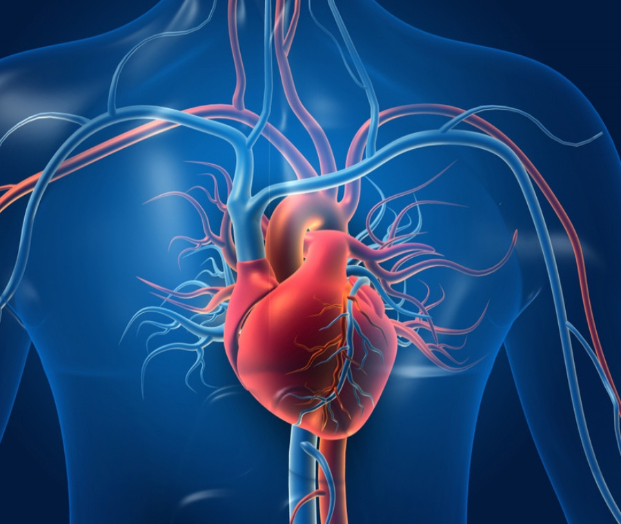

Scienze Motorie
Il percorso di Scienze Motorie svolto quest'anno è stato lo stimolo per far nascere in me un profondo e inaspettato interesse verso l'anatomia e la fisiologia umana. Gli argomenti trattati in classe mi hanno spinto a voler approfondire i meccanismi complessi e precisi che regolano la vita e il funzionamento del nostro organismo.
Il cuore e il sistema cardiocircolatorio
L'attenzione si è concentrata principalmente sul cuore e sul sistema cardiocircolatorio, una macchina biologica straordinaria. Lo studio del ciclo cardiaco, del percorso del flusso sanguigno e del ruolo fondamentale delle valvole mi ha permesso di comprendere la precisione millimetrica che si cela dietro a ogni singolo battito cardiaco.
L'anatomia cardiaca e la doppia circolazione
Dal punto di vista strutturale, il cuore è diviso dal setto in due metà (destra e sinistra), ciascuna formata da un atrio e un ventricolo. Questa anatomia supporta una doppia circolazione: la parte destra riceve il sangue deossigenato dal corpo e lo indirizza ai polmoni, mentre la parte sinistra accoglie il sangue ossigenato di ritorno dai polmoni e lo pompa nell'intero organismo. Le valvole cardiache assicurano l'unidirezionalità di questo flusso.
L'composizione del sangue e le sue funzioni
L'analisi si è poi estesa alla composizione del sangue e alle funzioni specifiche dei suoi elementi cellulari. Ho approfondito il ruolo dei globuli rossi, responsabili del trasporto dell'ossigeno tramite l'emoglobina; dei globuli bianchi, pilastri della difesa immunitaria contro i patogeni; e delle piastrine, essenziali nel processo di coagulazione.
Trasfusioni, compatibilità e agglutinazione
Enfin, di grande impatto è stato lo studio della compatibilità ematica nelle trasfusioni. L'introduzione di sangue non compatibile scatena l'agglutinazione, una reazione immunitaria gravissima in cui i globuli rossi formano ammassi potenzialmente fatali. Questo argomento evidenzia l'importanza clinica e vitale della classificazione dei gruppi sanguigni e del fattore Rh.